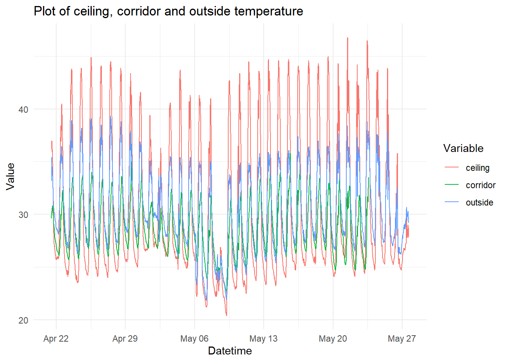
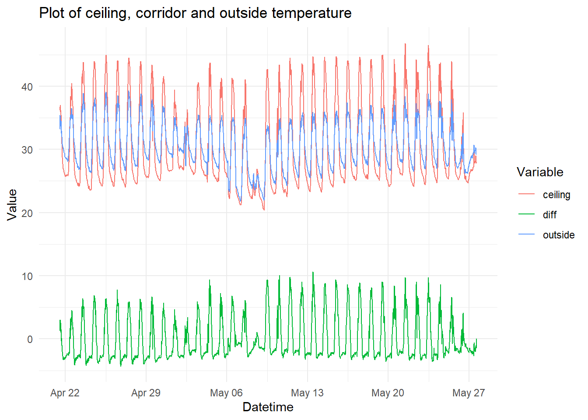
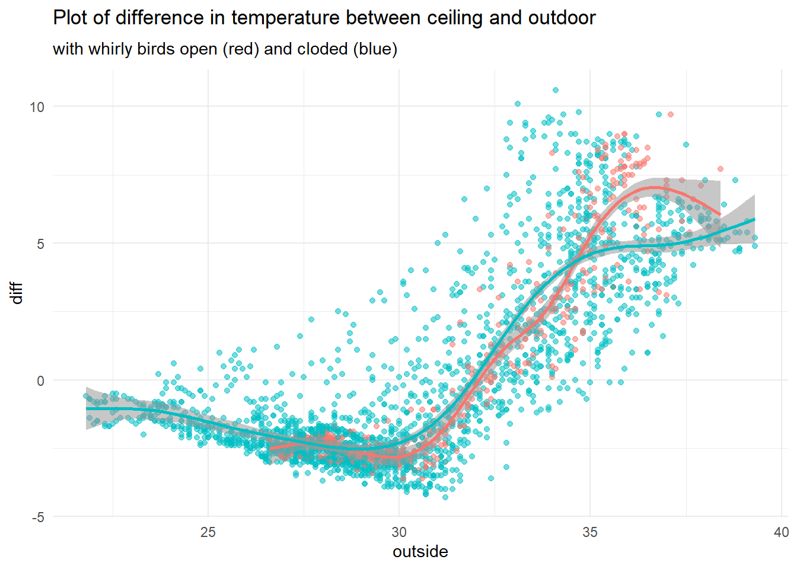
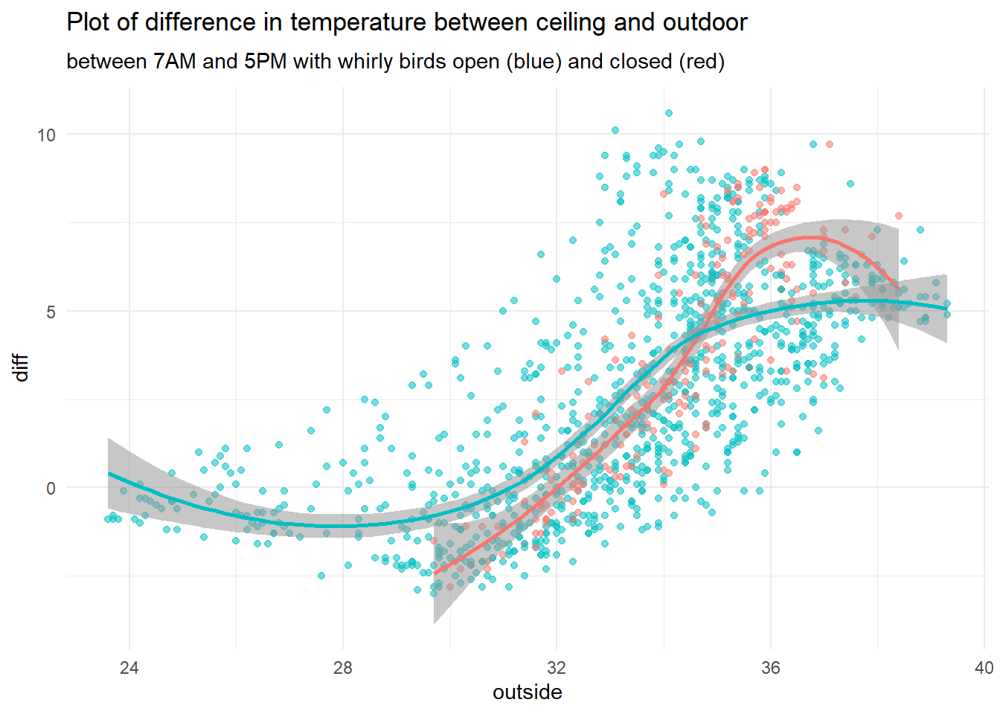
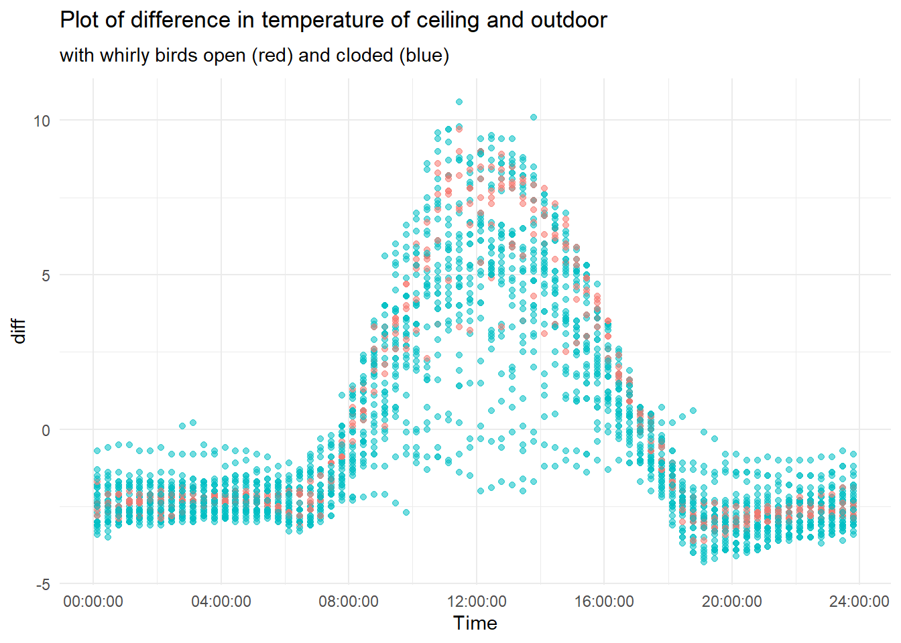
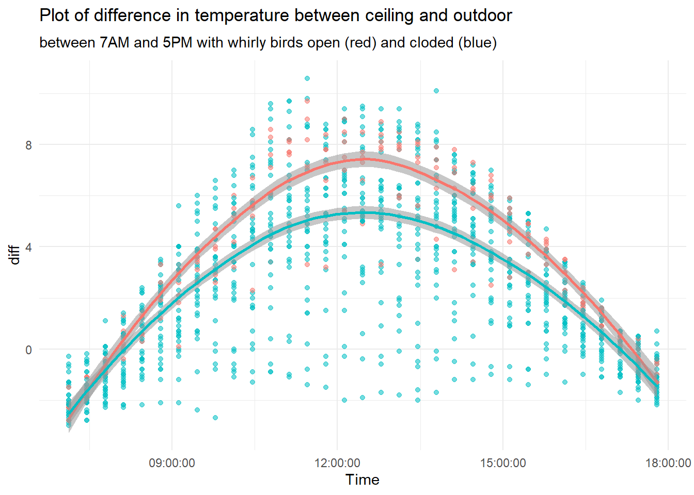

Small Projects: whirly birds
visualisation
building
R
A short exploration on the effect of whirly birds on the attic temperature of a warehouse
Introduction
Complying to thermal requirement in terms of temperature and relative humidity is a challenge in countries with tropical weather. In particular, warehouses with metal roof experience high temperature in the attic under the roof. This heat is then transmitted via the suspended ceiling to the space below that is artificially climatised. To reduce the work to be done by AC we installed two whirly birds in the warehouse in Jamtoli. We set up a small monitoring system by using temperature logs in 3 different location: outside, 20 cm below the roof overhang, in a shaded place, inside the corridor that exist between the entrance and the AC space, and above the suspended ceiling.
Data
Data was collected during the months of April and May with the whirly birds open during that period with the exception of the week between 15 May 5pm to 21 May 5pm. A plot of the collected data in the a two month period. During this period the whirly birds where sealed for 6 days to see if they had any impact.
A plot of the difference in temperature between ceiling and outside is shown below.

The following plot shows the relation of temperature difference versus outdoor temperature. We can observe two modes: with and without sunlight radiation. Up to sunrise, difference is negative while when sun radiation starts to heat the roof the relationship changes and temperature difference reaches positive values (attic warmer than outside). The data collected did not record the amount of haze and therefore the intensity of sun radiation that could be one of the factor (with Relative humidity) that generates variability. Adding a smooth curve shows another difference, above 34 C the whirly birds start to show a statistically significant difference in their impact on temperature difference but in the opposite direction as expected.
We should keep in mind that the closure of the whirly birds was done only for 1 week and that sun radiation, affected by cloudiness for example, was not recorded.


As seen above, the effect of the whirly birds changes across the day and across temperatures. below a plot over the 24h and over working hours.


Four regression models were run: \[M1: T_{diff} = \alpha + \beta T_{ext}\] \[M2: T_{diff} = \alpha + \beta T_{ext}+ WB\] \[M3: T_{diff} = \alpha + \beta T_{ext_{8-17h}}\] \[M4: T_{diff} = \alpha + \beta T_{ext_{8-17h}}+WB\]
Two model only regressing the difference between ceiling and outdoor temperature on outdoor temperature (M1, M3) and two having whirly bird treatment (with values 1 and 0 for open and close) on models M2 and M4. Additionally model M3 and M4 have used only temperature between 7am and 5pm. Result show a negative impact on temperature difference (less difference) across the recorded values (-0.15) and even more in the 7am 5pm range (-0.34). In both case the result are not statistically significant.
| Characteristic | *M1 | M2 | M3 | M4 | ||||||||
|---|---|---|---|---|---|---|---|---|---|---|---|---|
| Beta | 95% CI1 | p-value | Beta | 95% CI1 | p-value | Beta | 95% CI1 | p-value | Beta | 95% CI1 | p-value | |
| outside | 0.71 | 0.69, 0.73 | <0.001 | 0.71 | 0.69, 0.73 | <0.001 | 0.72 | 0.67, 0.76 | <0.001 | 0.71 | 0.66, 0.75 | <0.001 |
| wb | 0.16 | -0.07, 0.39 | 0.2 | -0.34 | -0.70, 0.02 | 0.063 | ||||||
| 1 CI = Confidence Interval | ||||||||||||
Conclusion
the data collected does not support the positive impact of whirly birds on the difference of temperature between the attic and outside. The data may not be capturing significant other factors such as sun radiance, humidity, wind. interestingly up to 34 C the whirly birds have a positive impact but this reverses at 36. it should also be considered that maybe the wrapped whirly birds may act as heat collector and therefore contributing to the over warming of the roof-attic.
Further data should be collected, perhaps adding more information on the sky condition, humidity, wind. Analysis should be run again with the new gathered data.